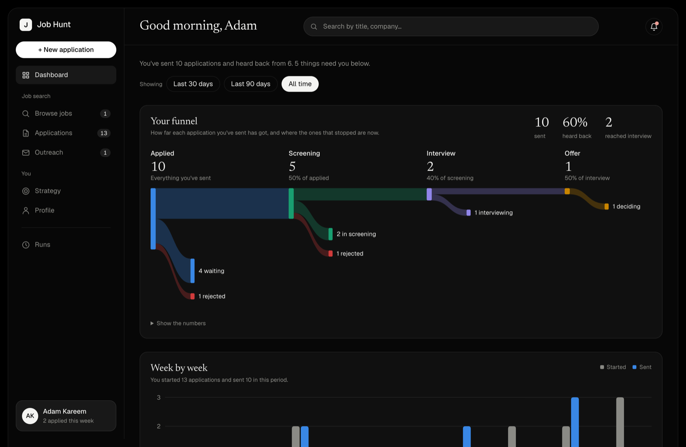
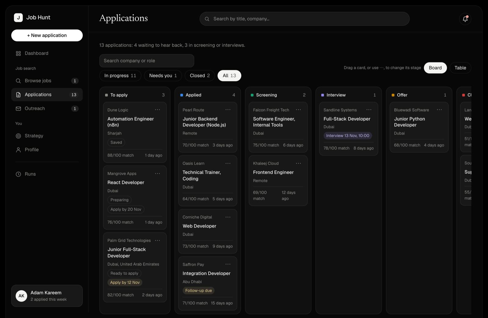
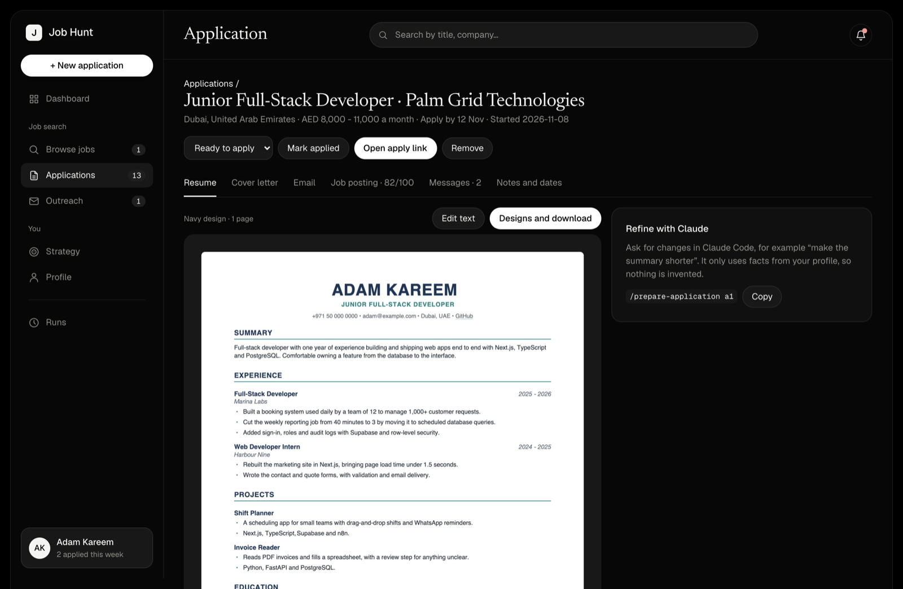
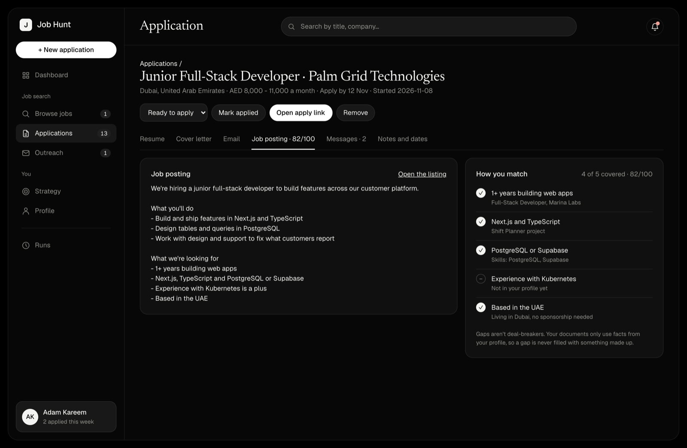

A board that shows what needs you
Every application sits in its stage. Apply-by dates, interview times and overdue follow-ups show on the card, so nothing goes quiet without you noticing.
Open source · For Claude Code
Claude finds the jobs, scores each one against your profile, and drafts the resume, the cover letter and the message. You read them and send them yourself.
Free under the MIT licence. Built for the UAE and remote roles. No server to run.

Every screenshot here shows made-up demo data.
How it works
You type short commands in Claude Code. The results land on a private dashboard in your browser.
Publishes your own private dashboard and builds your profile from your CV and a few questions.
Searches Indeed, LinkedIn and NaukriGulf. Each job gets a score from 0 to 100 for your real chance of getting hired, with reasons.
A resume and cover letter written for that one job, in any of twelve PDF designs, from the facts in your profile.
Finds the hiring manager or recruiter and drafts a personal message. The board follows each application to an offer.
A look around
Every application sits in its stage. Apply-by dates, interview times and overdue follow-ups show on the card, so nothing goes quiet without you noticing.

Each application has its tailored resume shown as the real PDF page, with the cover letter, the email, the job posting, your messages and your notes in tabs beside it.

Each requirement in the listing is checked against your profile, with where the proof comes from. What you don't have is shown as a gap, and it stays a gap.

The rules
These are written into the project, so every command follows them.
Documents and messages use only what's in your profile. No made-up skills, employers, dates or results.
Nothing leaves your computer by itself. You press send on every application and every message.
No connecting, messaging or applying for you, and no tool that asks for your LinkedIn login.
Company pages and work profiles. No personal emails and no guessed addresses.
It lives in your private claude.ai page and in a local folder that git ignores. One button downloads all of it.
Before you start
Setup
Get the code, start Claude Code in the folder and run /setup. It asks for your CV and a few things a CV can't answer, such as the roles you want and your work status.
Not ready to set it up? The demo runs in your browser with made-up data, and nothing in it is saved.
git clone https://github.com/jasirjaleel/gulf-job-hunt.git
cd gulf-job-hunt
npm install
claude
# then, inside Claude Code
/setup